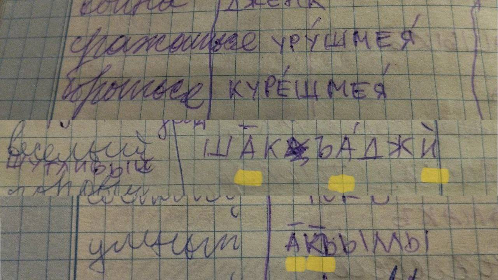
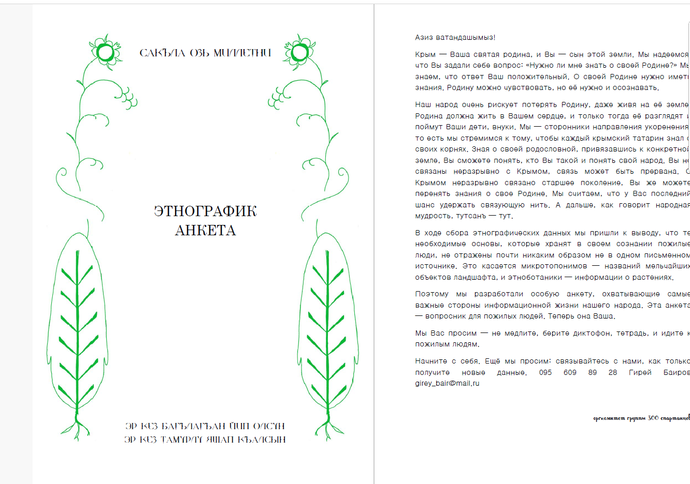
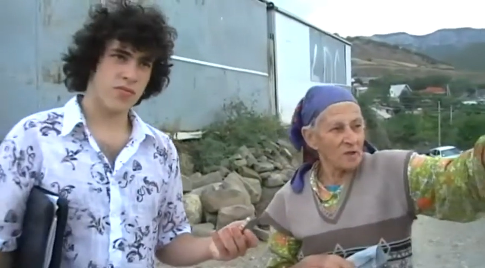
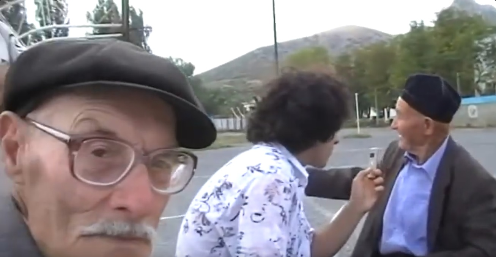
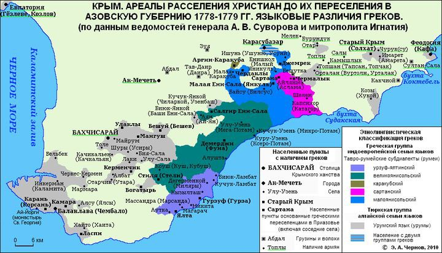

<!DOCTYPE html>
<html lang="en">
<head>
    <meta charset="utf-8" />
    <meta name="viewport" content="width=device-width, initial-scale=1.0, maximum-scale=1.0, user-scalable=no" />

    <title></title>
    <link rel="stylesheet" href="dist/reset.css">
    <link rel="stylesheet" href="dist/reveal.css" />
    <link rel="stylesheet" href="css/slides-extended.css" />
    <link rel="stylesheet" href="dist\theme\white_contrast_compact_verbatim_headers.css" id="theme" />
    <link rel="stylesheet" href="plugin\highlight\zenburn.css" />
    <link rel="stylesheet" href="plugin/customcontrols/style.css">


    <script defer src="dist/fontawesome/all.min.js"></script>
    <script defer src="plugin/load-mathjax.js"></script>

    <script type="text/javascript">
        function pageInIframe() {
            return (window.location !== window.parent.location);
        }

        let forgetPop = true;
        function onPopState(event) {
            if(forgetPop){
                forgetPop = false;
            } else if( pageInIframe()) {
                parent.postMessage(event.target.location.href, "app://obsidian.md");
            }
        }
        window.onpopstate = onPopState;
        window.onmessage = event => {
            if(event.data == "reload"){
                window.document.location.reload();
            }
            forgetPop = true;
        }

        function fitElements() {
            const itemsToFit = document.getElementsByClassName('fitText');
            for (const item in itemsToFit) {
                if (Object.hasOwnProperty.call(itemsToFit, item)) {
                    const element = itemsToFit[item];
                    fitElement(element, 1, 1000);
                    element.classList.remove('fitText');
                }
            }
        }

        function fitElement(element, start, end) {

            let size = (end + start) / 2;
            element.style.fontSize = `${size}px`;

            if (Math.abs(start - end) < 1) {
                while (element.scrollHeight > element.offsetHeight) {
                    size--;
                    element.style.fontSize = `${size}px`;
                }
                return;
            }

            if (element.scrollHeight > element.offsetHeight) {
                fitElement(element, start, size);
            } else {
                fitElement(element, size, end);
            }
        }

        document.onreadystatechange = () => {
            fitElements();
            if (document.readyState === 'complete') {
                if (pageInIframe() && window.location.href.indexOf("?export") != -1){
                    parent.postMessage(event.target.location.href, "app://obsidian.md");
                }
                if (window.location.href.indexOf("print-pdf") != -1){
                    let stateCheck = setInterval(() => {
                        clearInterval(stateCheck);
                        window.print();
                    }, 250);
                }
            }
        };
    </script>
</head>

<body>
    <div class="reveal">
        <div class="slides"><section  data-markdown><script type="text/template"><!-- .slide: class="drop" template="" -->
<div class="" style="position: absolute; left: 0px; top: 0px; height: 700px; width: 960px; min-height: 700px; display: flex; flex-direction: column; align-items: center; justify-content: center" absolute="true">

# Фонология и некоторые особенности синтаксиса говоров Судакского региона

### *Asan Emirsale*

Aqmescit, 2025
</div></script></section><section  data-markdown><script type="text/template"><!-- .slide: class="drop" template="" -->
<div class="" style="position: absolute; left: 0px; top: 0px; height: 700px; width: 960px; min-height: 700px; display: flex; flex-direction: column; align-items: center; justify-content: center" absolute="true">

## С чего началось
Словарь, отражающий фонетические особенности (2004-...)

</div></script></section><section  data-markdown><script type="text/template"><!-- .slide: class="drop" template="" -->
<div class="" style="position: absolute; left: 0px; top: 0px; height: 700px; width: 960px; min-height: 700px; display: flex; flex-direction: column; align-items: center; justify-content: center" absolute="true">

## Ударение
Привычная концепция ударения не подходит для описания того, как мы разговариваем
## Вскоре стало понятно:

- ударения в слове может не быть
- может быть два ударения
- кроме ударения, слога различаются по долготе гласных
</div></script></section><section  data-markdown><script type="text/template"><!-- .slide: class="drop" template="" -->
<div class="" style="position: absolute; left: 0px; top: 0px; height: 700px; width: 960px; min-height: 700px; display: flex; flex-direction: column; align-items: center; justify-content: center" absolute="true">

## Далее
Доклад по особенностям говора селения Таракташ на студенческой конференции (2007, *результаты не были опубликованы*)

### Основные выводы:
- знакомство с понятием **позиционной долготы**
- с говорами других регионов Крыма не совпадает произношение многих **согласных звуков**
</div></script></section><section  data-markdown><script type="text/template"><!-- .slide: class="drop" template="" -->
<div class="" style="position: absolute; left: 0px; top: 0px; height: 700px; width: 960px; min-height: 700px; display: flex; flex-direction: column; align-items: center; justify-content: center" absolute="true">

## Приобщение к проектам Qardaşlıq и этнографической инициативе Гирея Баирова
Работа по изучению ботанической лексики Крыма

</div></script></section><section  data-markdown><script type="text/template"><!-- .slide: class="drop" template="" -->
<div class="" style="position: absolute; left: 0px; top: 0px; height: 700px; width: 960px; min-height: 700px; display: flex; flex-direction: column; align-items: center; justify-content: center" absolute="true">

## Экспедиция в Таракташ (2009)

</div></script></section><section  data-markdown><script type="text/template"><!-- .slide: class="drop" template="" -->
<div class="" style="position: absolute; left: 0px; top: 0px; height: 700px; width: 960px; min-height: 700px; display: flex; flex-direction: column; align-items: center; justify-content: center" absolute="true">

## На месте опрошены десятки старожилов

</div></script></section><section  data-markdown><script type="text/template"><!-- .slide: class="drop" template="" -->
<div class="" style="position: absolute; left: 0px; top: 0px; height: 700px; width: 960px; min-height: 700px; display: flex; flex-direction: column; align-items: center; justify-content: center" absolute="true">

## Предварительные наблюдения
- есть **западная группа** говоров (Ай-Серез, Ворун, Шелен, Хапсхор, Арпат) и **восточная** (от Таракташа до Отуза)
- в восточной части **мало румейской лексики** (ящерица - *кестан-кере*, почти как в турецком, а на южном берегу и в татских регионах горного Крыма - вариант слова *куршофла*)
- **единичные** примеры топонимов румейского происхождения в восточной части Судакского региона


## Выводы (слишком поспешные):
- основа говора - язык огузоязычных переселенцев из Малой Азии
- лексика и фонетика сильно варьирует между селами
- конфессия оказала сильнейшиее влияние на язык
</div></script></section><section  data-markdown><script type="text/template"><!-- .slide: class="drop" template="" -->
<div class="" style="position: absolute; left: 0px; top: 0px; height: 700px; width: 960px; min-height: 700px; display: flex; flex-direction: column; align-items: center; justify-content: center" absolute="true">

## Конфессиональная структура региона в середине 17 века


Источник: Чернов, 2019
</div></script></section><section  data-markdown><script type="text/template"><!-- .slide: class="drop" template="" -->
<div class="" style="position: absolute; left: 0px; top: 0px; height: 700px; width: 960px; min-height: 700px; display: flex; flex-direction: column; align-items: center; justify-content: center" absolute="true">

## Вроде бы всё так, но...
Поиск исходного или близкого говора среди среди огузских наречий Анатолии, Черноморского региона Турции и Балкан не привел к результатам.

Каждый раз, когда обнаруживался схожий говор в Турции, при внимательном рассмотрении выявлялись и глубокие различия. Полного попадания в фонологические особенности не было обнаружено ни разу.
</div></script></section><section  data-markdown><script type="text/template"><!-- .slide: class="drop" template="" -->
<div class="" style="position: absolute; left: 0px; top: 0px; height: 700px; width: 960px; min-height: 700px; display: flex; flex-direction: column; align-items: center; justify-content: center" absolute="true">

# Позиционная долгота гласных
Разновидность **вторичной долготы**. Примеров первичной долготы в тюркских языках очень мало. 

**Описание явления**: удлинение гласной за счет выпадения последующей за ней согласной или сокращения длины краткой гласной в следующем слоге. Гласные *ы*, *и* в тюркских языках всегда краткие. gö:(r)di, qa:ldı

**Но**: это не объясняет, почему "а" удлиняется в слове şa:qacı, и почему нет сокращения длины краткой гласной в словах ge:liy, ge:çiy.
</div></script></section><section  data-markdown><script type="text/template"><!-- .slide: class="drop" template="" -->
<div class="" style="position: absolute; left: 0px; top: 0px; height: 700px; width: 960px; min-height: 700px; display: flex; flex-direction: column; align-items: center; justify-content: center" absolute="true">

# Ударение
Часто наблюдается несколько ударений в слове

<audio controls src="audio/02_urgu_tepardi.mp3"></audio> 

<audio controls src="audio/03_urgu_varacagik.mp3"></audio>

Источники: youtu.be/VqffTEMirH4, youtu.be/fsU8O6N4R74
</div></script></section><section  data-markdown><script type="text/template"><!-- .slide: class="drop" template="" -->
<div class="" style="position: absolute; left: 0px; top: 0px; height: 700px; width: 960px; min-height: 700px; display: flex; flex-direction: column; align-items: center; justify-content: center" absolute="true">

# Ударение в глаголах
В глаголах ударение чаще всего падает на предпоследний слог
qAldı, qalmAdı, qalmAsın, qalIyım. В повелительном наклонении - (sen) qalmA, (biz) qalmAq.

## Ударение в существительных и местоимениях
При добавлении суффикса к основе ударение основы часто сохраняется полностью, или в конечном слове оказывается два ударения: avtObusta, XapsxOra, Onın.
</div></script></section><section  data-markdown><script type="text/template"><!-- .slide: class="drop" template="" -->
<div class="" style="position: absolute; left: 0px; top: 0px; height: 700px; width: 960px; min-height: 700px; display: flex; flex-direction: column; align-items: center; justify-content: center" absolute="true">

# Лабиализация согласных
<audio controls src="audio/04_fonetika.mp3"></audio> 

<audio controls src="audio/05_fonetika.mp3"></audio>

<audio controls src="audio/06_fonetika.mp3"></audio> 

<audio controls src="audio/07_fonetika.mp3"></audio>
</div></script></section><section  data-markdown><script type="text/template"><!-- .slide: class="drop" template="" -->
<div class="" style="position: absolute; left: 0px; top: 0px; height: 700px; width: 960px; min-height: 700px; display: flex; flex-direction: column; align-items: center; justify-content: center" absolute="true">

# Поиск субстрата
Эти явления носят системный характер. Кроме того, они нехарактерны для тюркских языков.

Главный кандидат на языковую группу среди известных ныне языков с такими чертами - западнокавказские языки. Однако в них явления лабиализации носят более системных характер, и затрагивают даже звуки "к" и "г".
</div></script></section><section  data-markdown><script type="text/template"><!-- .slide: class="drop" template="" -->
<div class="" style="position: absolute; left: 0px; top: 0px; height: 700px; width: 960px; min-height: 700px; display: flex; flex-direction: column; align-items: center; justify-content: center" absolute="true">

# Но
<audio controls src="audio/08.mp3"></audio> 

<audio controls src="audio/09.mp3"></audio>

<audio controls src="audio/10.mp3"></audio> 

<audio controls src="audio/11.mp3"></audio>

<audio controls src="audio/12.mp3"></audio>
</div></script></section><section  data-markdown><script type="text/template"><!-- .slide: class="drop" template="" -->
<div class="" style="position: absolute; left: 0px; top: 0px; height: 700px; width: 960px; min-height: 700px; display: flex; flex-direction: column; align-items: center; justify-content: center" absolute="true">

Гласные

- влияние придыхания и глоттализации на гласную.
- частый переход "а" в "ы"
- переходной звук между "а", "э" и "ы"
- дифтонгиация с j и w
</div></script></section><section  data-markdown><script type="text/template"><!-- .slide: class="drop" template="" -->
<div class="" style="position: absolute; left: 0px; top: 0px; height: 700px; width: 960px; min-height: 700px; display: flex; flex-direction: column; align-items: center; justify-content: center" absolute="true">

# Аномалии в синтаксисе

| Фраза       | Перевод      |     |
| ----------- | ------------ | --- |
| baharı      | весна        |     |
| qırağı      | иней         |     |
| tumağı      | насморк      |     |
| çökçü       | молоток      |     |
| tüssü sarı  | желтый цвет  |     |
| eli yarıq   | рана на руке |     |
| saçı siyrek | редковолосый |     |
| yezı        | след         |     |
</div></script></section><section  data-markdown><script type="text/template"><!-- .slide: class="drop" template="" -->
<div class="" style="position: absolute; left: 0px; top: 0px; height: 700px; width: 960px; min-height: 700px; display: flex; flex-direction: column; align-items: center; justify-content: center" absolute="true">

# Аномальное использование родительного падежа

В топонимах: Taraqtaşıñ dere, Qızılçığıñ qayası, Sasığıñ tepesi (от трети до 70% всех микротопонимов Судакского региона)

<audio controls src="audio/07_sintaksis.mp3"></audio> 

В антропонимах: Balığıñ Sale
</div></script></section><section  data-markdown><script type="text/template"><!-- .slide: class="drop" template="" -->
<div class="" style="position: absolute; left: 0px; top: 0px; height: 700px; width: 960px; min-height: 700px; display: flex; flex-direction: column; align-items: center; justify-content: center" absolute="true">

# Использование служебного глагола edi
Регулярные случаи аномального использования edi:

adıydı Mahmut

adamıydı güzel

Перевод существительного в глагол (придание ему состояния): olar dostıydı

Примеров очень много, больше всего от хороших носителей языка.
</div></script></section><section  data-markdown><script type="text/template"><!-- .slide: class="drop" template="" -->
<div class="" style="position: absolute; left: 0px; top: 0px; height: 700px; width: 960px; min-height: 700px; display: flex; flex-direction: column; align-items: center; justify-content: center" absolute="true">

# men gördiydim
Калькирование механизма образования плюсквамперфекта в шапсугском и бжедугском диалектах адыгейского языка

</div></script></section><section  data-markdown><script type="text/template"><!-- .slide: class="drop" template="" -->
<div class="" style="position: absolute; left: 0px; top: 0px; height: 700px; width: 960px; min-height: 700px; display: flex; flex-direction: column; align-items: center; justify-content: center" absolute="true">

## Если у вас есть скепсис...
в отношении западнокавказского атрибутирования субстратного языка Крыма,

вот несколько примеров, которые могут его уменьшить:

| Крымские говоры                                           | Западнокавказские языки                          | Перевод                                                       |
| --------------------------------------------------------- | ------------------------------------------------ | ------------------------------------------------------------- |
| **йанэ** (восточный Судак, Хапсхор, румеи Карасубазара)   | йаныпI (абазинский)                              | конечно, именно                                               |
| **йа** (от Коза до Туваха)                                | йавыт (ашхарский диалект абазинского)            | да                                                            |
| **марэ** (Тувах и три села -Узени)                        | мары (адыгейский)                                | вот                                                           |
| **секе** (Судакский регион)                               | секе (западнокавказские языки)                   | кресло (Западный Кавказ), сет из глинобитного кирпича (Судак) |
| фамилии на -**ко** (Аметка, Усеинко, Татарка, Чветко)     | къуэ                                             | "сын", формант, с помощью которого образуются фамилии         |
| **пастя** (Ай-Серез)                                      | пасата (западнокавказские языки)                 | раньше                                                        |
| **каса** (Таракташ)                                       | гуаща (адыгские языки), а-хъаса (абхазский язык) | знатная женщина                                               |
| **заар**/**зар**/**за:ры** (Судак, Байдары, румеи, урумы) | зъар (абазинский)                                | вопросительная частица                                        |
</div></script></section></div>
    </div>

    <script src="dist/reveal.js"></script>
    <script src="plugin/notes/notes.js"></script>
    <script src="plugin/markdown/markdown.js"></script>
    <script src="plugin/highlight/highlight.js"></script>

    <script src="plugin/zoom/zoom.js"></script>
    <script src="plugin/math/math.js"></script>
    <script src="plugin/mermaid/mermaid.js"></script>
    <script src="plugin/chart/chart.umd.js"></script>
    <script src="plugin/chart/plugin.js"></script>
    <script src="plugin/customcontrols/plugin.js"></script>

    <script>
        function extend() {
            const target = {};
            for (let i = 0; i < arguments.length; i++) {
                const source = arguments[i];
                for (const key in source) {
                    if (source.hasOwnProperty(key)) {
                        target[key] = source[key];
                    }
                }
            }
            return target;
        }

        function isLight(color) {
            let hex = color.replace('#', '');

            // convert #fff => #ffffff
            if (hex.length == 3) {
                hex = `${hex[0]}${hex[0]}${hex[1]}${hex[1]}${hex[2]}${hex[2]}`;
            }

            const c_r = parseInt(hex.substr(0, 2), 16);
            const c_g = parseInt(hex.substr(2, 2), 16);
            const c_b = parseInt(hex.substr(4, 2), 16);
            const brightness = ((c_r * 299) + (c_g * 587) + (c_b * 114)) / 1000;
            return brightness > 155;
        }

        const bgColor = getComputedStyle(document.documentElement).getPropertyValue('--r-background-color').trim();

        if (isLight(bgColor)) {
            document.body.classList.add('has-light-background');
        } else {
            document.body.classList.add('has-dark-background');
        }

        // default options to init reveal.js
        const defaultOptions = {
            controls: true,
            progress: true,
            history: true,
            center: true,
            transition: 'default', // none/fade/slide/convex/concave/zoom
            plugins: [
                RevealMarkdown,
                RevealHighlight,
                RevealZoom,
                RevealNotes,
                RevealMath.MathJax3,
                RevealMermaid,
                RevealChart,
                RevealCustomControls,
            ],
            allottedTime: 120 * 1000,
            mathjax3: {
                mathjax: 'plugin/math/mathjax/tex-chtml-full.js',
            },
            markdown: {
                gfm: true,
                mangle: false,
                pedantic: false,
                smartLists: false,
                smartypants: false,
            },
            mermaid: {
                theme: isLight(bgColor) ? 'default' : 'dark',
            },
            customcontrols: {
                controls: [
                ]
            },
        };

        if ( pageInIframe() ) {
            defaultOptions.scrollActivationWidth = 5;
        }

        // options from URL query string
        const queryOptions = Reveal().getQueryHash() || {};

        const options = extend(defaultOptions, {"controls":true,"progress":true,"slideNumber":true,"center":true,"transition":"slide","transitionSpeed":"default","width":960,"height":700,"margin":0.04}, queryOptions);
    </script>

    <script>
      Reveal.initialize(options);
    </script>
    <!-- created with Slides Extended reveal.html template -->
</body>
</html>
